| A comparison theorem, Sobolev imbeddings and Konrachov theorem for Riemannian manifolds |
| A comparison theorem, Sobolev imbeddings and Konrachov theorem for Riemannian manifolds |
The goal of this section is to prove that Sobolev imbeddings are also available for complete Riemannian manifold with bounded curvature and strictly positive injectivity radius, that is, the following results.
Theorem 11 (Sobolev imbeddings). Theorem 1 holds when one replaces 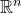 by a complete Riemannian manifold of dimension 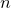 with bounded curvature (sectional and Ricci) and injectivity radius 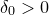.
The definition of Sobolev spaces as completion of spaces of smooth functions, w.r.t the Sobolev norms generalises on Riemannian manifolds, namely, we denote by 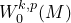 the completion of 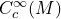 w.r.t the norm 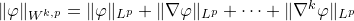 where 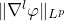 are computed as follow: the metric 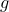 induces a fiberwise norm for 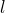-covariant tensors, integrate that of 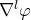, one obtains .
Similarly, the space 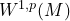 is defined as the completion of 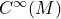 w.r.t 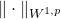.
Remark 7. Unlike the Euclidean case, one does not define the derivatives term, e.g. 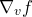 for 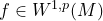 using integration by part and Riesz representation, that is, one does not expect a formular such as 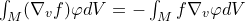 since the "boundary term" 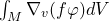 does not vanish, even if 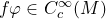. The exterior derivative 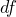 can be defined, which is in fact equivalent to de Rham’s notion of current. The term 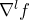 for 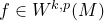, when needed, can be defined as a 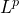 section of 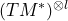 giving by the limit of smooth sections 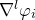 for an equivalent class of Cauchy sequence 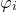 representing 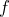. The completeness of the space of sections of a vector bundle follows from the result in each trivialising chart and the fact that restriction maps commute with the limit.
Proposition 11.1 (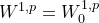 ). If  is complete then is dense in , equivalently 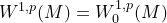.
is complete then is dense in , equivalently 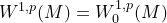.
It suffices to prove that given a function 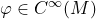, one can approximate 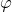 under the norm by functions in . Fix 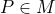, one uses a cut-off function 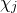 which is  on 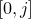, 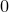 on 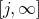 and linear inside and defines 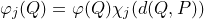. Note that the distance function is only Lipschitz and not necessarily smooth (so we did not mind taking a linear cut-off). However, since 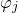 is compactly support and Lipschitz and we can approximate each by a sequence in : Let 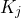 be the support of and 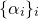 be a finite partition of unity subordinating to an open coordinated cover of 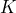. Since 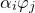 is Lipschitz, viewed in a chart, it can be 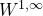-approximated by smooth functions, due to the following fact.
on 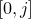, 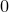 on 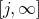 and linear inside and defines 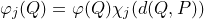. Note that the distance function is only Lipschitz and not necessarily smooth (so we did not mind taking a linear cut-off). However, since 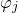 is compactly support and Lipschitz and we can approximate each by a sequence in : Let 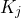 be the support of and 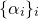 be a finite partition of unity subordinating to an open coordinated cover of 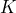. Since 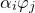 is Lipschitz, viewed in a chart, it can be 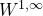-approximated by smooth functions, due to the following fact.
Fact. If 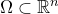 be a bounded domain with 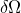 regular, then  .
.
The approximation scheme looks like 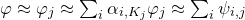 where 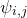 are smooth and compactly support.
Remark 8. The similar results for higher orders are complicated, for example, one can prove that 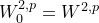 under the hypothesis of bounded curvature and strictly positive injectivity radius. The third order requires extra conditions.
The second part of the Theorem 11 is local in nature, and therefore easier. We will prove this second part by accepting the first one, which we will come back and prove eventually.
For the imbedding into 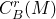, it suffices to establish the case 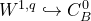, the higher order case then follows: If 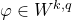 then where .
Similarly, for the imbedding into , it suffices to establish the case for .
Since , it suffices to prove the following Lemma 12 and Lemma 13.
Lemma 12 ( ). Let be a complete Riemannian manifold with injectivity radius and sectional curvature , then for all , one has
Take and let be the geodesic polar coordinate centered at , then by Theorem 4, the ratio of the metric volume form and the Euclidean volume form of is .
let be a cut-off function which is constantly near and supported in . Then
Integrate w.r.t , recall that denotes the volume of :
![\begin{equation*} \begin{split} \left|\varphi (p)\right| & \leq (\omega _{n-1})^{-1} \int _ B \left| \nabla (\varphi (r,\theta )\chi (r)) \right| r^{1-n}r^{n-1}drd\theta \\ & \leq (\omega _{n-1})^{-1} \left(\int _ B \left| \nabla (\varphi (r,\theta )\chi (r)) \right|^ q dE\right)^{1/q}\left(\omega _{n-1}\int _0^\delta r^{(n-1)(1-q)}dr\right)^{1/q'}\\ & \leq (\frac{\pi }{2})^{n-1} (\omega _{n-1})^{-1/q} \left(\| \nabla \varphi \| _{L^ q} + \sup _{[0,\delta ]}|\chi ’|\| \varphi \| _{L^ q} \right) \left(\frac{q-1}{q-n}\delta ^{\frac{q-n}{q-1}}\right)^{1/q'} \end{split}\end{equation*}](images/img-0343.png) |
where denotes the Hölder conjugate of and for we used Hölder inequality w.r.t for the second inequality and the comparison for the third. The conclusion follows.
Lemma 13 ( ). Let be a complete Riemannian manifold with injectivity radius and bounded curvature, then for all , one has
By Lemma 12, one can discard the term and only need to treat the second term of LHS. Let as in the proof of Lemma 12 ( being the upper bound of the sectional curvature). One only need to consider the case where because otherwise .
Let be the midpoint of  , and denote by defined on the Euclidean ball . We also denote by the preimages of these points in
, and denote by defined on the Euclidean ball . We also denote by the preimages of these points in  . See Figure 13.
. See Figure 13.
Now place in polar coordinate centered at :
Integrate on w.r.t to the measure given by the normal polar coordinates at :
![\begin{equation} \label{eq:lem:sobolev-case-holder} \begin{split} \int _{B_ O} |h(x) - \varphi (Q)| dE_ Q & \leq \int _{\theta \in \mathbb {S}^{n-1}} \int _{r=0}^{\rho (\theta )} r^{n-1}r \int _0^1|\frac{\partial }{\partial \rho }h(rt,\theta )|dtdrd\theta \\ ( u:= rt, \rho (\theta )\leq d)\qquad & \leq \int _{\theta \in \mathbb {S}^{n-1}}\int _{t=0}^1\int _{u=0}^{td}t^{-n-1}u^ n \left|\frac{\partial }{\partial \rho }h(u,\theta )\right|dtdud\theta \\ & = \int _{t=0}^1 t^{-n-1}\left( \int _{u=0}^{td}\int _{\theta \in \mathbb {S}^{n-1}}\left| \frac{\partial }{\partial \rho }h(u,\theta ) \right|u. dE_ Q \right)dt \\ (\text {Holder w.r.t } dE_ Q)\qquad & \leq \int _{t=0}^1 t^{-n-1} \left( \int _{u=0}^{td} \int _{\theta \in \mathbb {S}^{n-1}} \left| \frac{\partial }{\partial \rho }h(u,\theta ) \right|^ q dE_ Q \right)^{1/q} \left( \int _0^{td}\omega _{n-1} u^{q'}u^{n-1} du \right)^{1/q'}dt\\ (t\leq 1)\qquad & \leq \int _{t=0}^{1} t^{-n-1} \left(\frac{1}{q'+n}(td)^{q'+n}\right)^{1/q'} \left( \int _{u=0}^ d\int _{\theta \in \mathbb {S}^{n-1}} |\nabla \varphi |^ q dE_ Q \right)^{1/q}dt\\ & = C_1(q,n)d^{1 + \frac{n}{q'}} \left(\int _{B(Q,d)}|\nabla \varphi |^ q dE_ Q \right)^{1/q} \end{split} \end{equation}](images/img-0361.png) |
(41) |
Now using the fact that since the curvature is bounded, one has
Taking sum with the same computation for , one has
since , one has
The conclusion follows since .
For the first part of Theorem 11, it suffices to prove the case , that is, there exists a constant such that for and .
The proof by [ tries to optimise the constant , in an attempt to find the best inequality [. We will follow their arguments, as the extra effort is not much. We will prove that
Proposition 13.1. Given such that , for any  , there exists such that
, there exists such that
The appearance of the constant , given by
is due to the following local result.
Theorem 14 (Aubin). Given and , with , one has
In fact, this the norm of the imbedding .
We will accept the local result and use the Covering Lemma 10 to prove Proposition 13.1, which implies Theorem 11.
Note that given any smooth function supported in a small geodesic ball , by applying theorem 14 to the , viewed in the chart (that is, ) and use the fact that (see remark 6), one has
where converges to as .
It suffice to cover by geodesic ball such that there exists a partition of unity subordinated to such that . In fact for , one has
 |
Using the fact that there are at most balls overlapping at a point and that , one has
![\begin{equation*} \begin{split} \| \varphi \| _{p}^ q & \leq K^ q_\delta (n,q)\left(\| \nabla \varphi \| _ q^ q + 2^ q k(\delta ) H^{q-1}\int _ M |\varphi |^{q-1}|\nabla \varphi | + 2^ q k(\delta ) H^ q \| \varphi \| _ q^ q \right) \\ & \leq K^ q_\delta (n,q)\left[\| \nabla \varphi \| _ q^ q + 2^ q k(\delta ) H^{q-1}\| \nabla \varphi \| _ q\| \varphi \| _ q^{q-1} + 2^ q k(\delta ) H^ q \| \varphi \| _ q^ q \right]\\ \end{split}\end{equation*}](images/img-0395.png) |
It is elementary to see that this implies , from which the conclusion follows.
For the existence of such , one cover by balls using Lemma 10. Denote by the inverse of exponential maps and let be the smooth function, choose to be a bell curve with maximal value at , supported in and in and pose . Then
Pose with then
![\begin{equation*} \begin{split} \left|\nabla (h_ i^{1/q})\right| & = \left|\frac{m}{q}\frac{u_ i^{\frac{m}{q} - 1}\nabla u_ i}{(\sum u_ j^ m)^{1/q}} + u_ i^{m/q}\left(\frac{-1}{q}\right)\frac{\sum \nabla (u_ j^ m)}{(\sum u_ j^ m)^{1+ \frac{1}{q}}}\right|\\ & \leq \frac{m}{q.2^{-m/q}}|\nabla u_ i| + \frac{1}{q}\sum m \frac{|\nabla u_ j|}{(2^{-m})^{1+\frac{1}{q}}}\\ & \leq \left( \frac{m}{q}2^{m/q} + \frac{m}{q}2^{m(1+\frac{1}{q})}k(\delta )\right)C_2(g_ M,\delta )=\mathop {\rm const }\nolimits \end{split}\end{equation*}](images/img-0408.png) |
where , as in Lemma 10, is the upper bound of number of balls overlapping at the point in question.
| A comparison theorem, Sobolev imbeddings and Konrachov theorem for Riemannian manifolds |